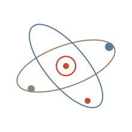
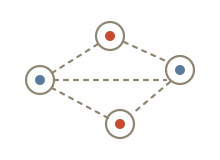
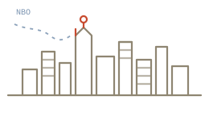
Backend Engineer & Technical Lead
I engineer backend architectures that stay resilient when traffic spikes. From handling 4,333 transactions per minute to building financial AML platforms and cross-border payment rails across East Africa and Asia, I care about performance, robust systems, and clear technical leadership.
✎ "If it can fail in production at 2 AM, design it to self-heal."
01 — About
I'm a Software Engineer and Technical Lead with over five years of experience designing backend systems, distributed architectures, and payment pipelines that run reliably in production.
My work spans payment infrastructure, AML compliance platforms, observability systems, and high-concurrency API gateways — always with a focus on measurable performance, maintainability, and cross-functional clarity.
I believe great engineering is as much about clear communication and team alignment as it is about thread locks and database indexes. Outside of production code, I'm a hands-on builder passionate about hardware, sketching, and systems craft.
Field Notes & Personal Workbench
✎ sketches, solder smoke, and side quests
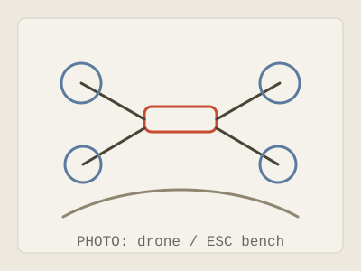
Hardware bench
Drone builds & tuning
Soldering, rebuilding ESC motor drivers, and dialing in telemetry controllers.
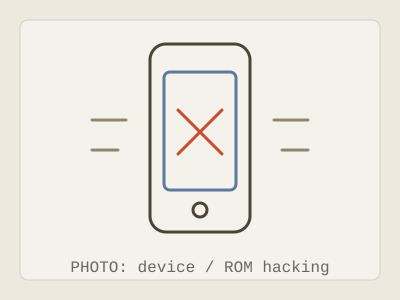
Device revival
Legacy ROM hacking
Flashing custom Android ROMs, kernel tweaks, and repurposing old hardware as edge nodes.
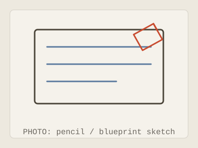
Visual craft
Pencil & blueprints
Hand-drawn colored-pencil blueprints, technical diagramming, and freehand sketching.
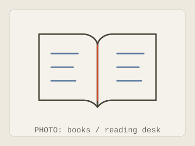
Currently reading
DDIA & event streams
Designing Data-Intensive Applications by Martin Kleppmann, plus Kafka event-sourcing guides.
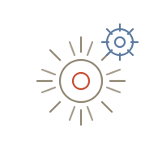
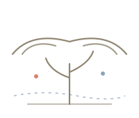
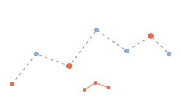
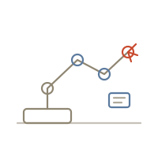
02 — Experience
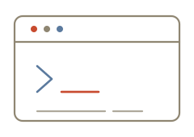
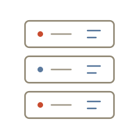
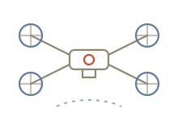
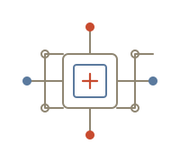
03 — Skills
Frontend Engineering
Backend & Systems
Distributed Systems & Messaging
Cloud & DevOps
Data & Storage
Observability & Reliability
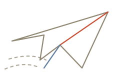
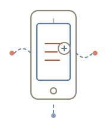
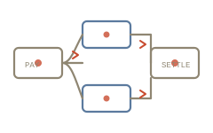
04 — Selected Engineering Work
✎ Real production challenges, architected & solved under peak traffic.
Architected a full-stack financial crime screening & monitoring platform from scratch. Built real-time customer screening, transaction monitoring algorithms, custom risk scoring, and automated regulatory reporting with zero dropped alert events.
Dynatrace monitoring bills were escalating rapidly. Designed & deployed a full OpenSearch observability architecture with custom log pipelines, log aggregation, and real-time alerting — slashing observability costs while preserving 100% system visibility.
illustrative comparison: cost reduced while coverage retained
Architected multi-corridor cross-border payment rails connecting Kenya, Ethiopia, Tanzania, Uganda, India, Japan, and China. Built resilient mobile money payout terminations handling real-time currency settlement.
The legacy Javalin gateway chokepoint was creating 30-minute worst-case delays during holiday traffic spikes. Led full gateway re-architecture to Spring Boot, boosting throughput to 4,333 TPM and cutting turnaround latency under 50 seconds.
Designed and shipped operational web tools for campus operations, contract tracking, student onboarding portals, and Moodle LMS analytics dashboards serving thousands of active students and faculty.
Developed a mobile payment application for a trading ecosystem at Rivest Enterprises, alongside school management tools that streamlined operational workflows and real-time parent notifications.
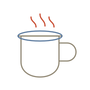
05 — Contact
Open to senior backend, distributed systems, platform engineering, and technical lead opportunities — remote or Nairobi-based.
usually replies within a day
sgatharikih@gmail.com linkedin.com/in/gatharikih github.com/Gatharikih hashnode.com/@gatharikih Download Résumé (PDF)